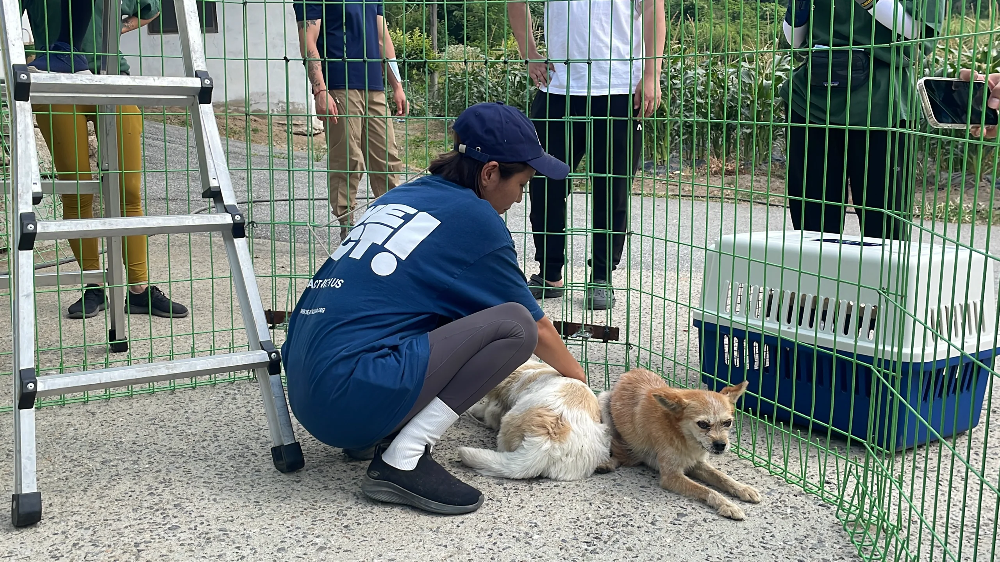

현장
01위액트 크루
철창 너머로 먼저 손을 내미는 사람들.
2018년 여름, 평범한 시민들의 작은 움직임에서 시작했습니다. 크루들의 봉사와 재능기부로 운영됩니다.
현장
철창 너머로 먼저 손을 내미는 사람들.
2018년 여름, 평범한 시민들의 작은 움직임에서 시작했습니다. 크루들의 봉사와 재능기부로 운영됩니다.
A · Abused
아무도 들어가지 않는 곳으로, 주저하지 않고 들어갑니다.
뜬장, 개농장, 불 탄 마을. 동물이 고통받는 곳이라면 어디든 직접 찾아가 아이들을 구조합니다.
A · Abused
크루가 직접 찍은 구조 현장입니다. 한 마리 한 마리, 이렇게 가족에게로 가는 길이 시작됩니다.
구조는 현장에서 끝나지 않습니다. 아이가 가족을 만날 때까지 함께해 주세요.

T · Thriving
평생 가족을 만나는 날.
구조된 아이들은 국내와 해외에서 새 가족을 만나, 사랑받으며 행복하게 살아가고 있습니다.